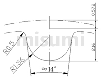

For your VEX HTD 5 mm belt: enter a target diameter, choose a nearby size, and download STEP for CAD or STL for printing. Save this HTML file and open it in your browser; generation works offline.
To share, email just index.html. All code and images are included. Reference links are optional and require internet access.
Fixed profile: 5 mm pitch · pitch-line differential 0.5715 mm · outside diameter = pitch diameter − 1.143 mm. Manufacturer reference and CAD.
Preview uses the same tooth outline as the STL. Blue dashed line = pitch circle. Print at 100% scale, interpreting STL coordinates as millimeters.
STEP contains smooth CAD surfaces for editing in SOLIDWORKS; it imports as a solid without the original feature history. STL is a triangle mesh for printing.
STEP and STL face width: 9 mm. Grooves include 0.10 mm of local print-fit allowance; pitch and outside diameter stay fixed. Add mounting features later in CAD.
Nominal dimensions do not guarantee a printed fit. Groove shape, belt seating, printer accuracy, and belt condition must also be checked. Change manufacturing clearance locally only after checking pitch and scale.
The fit allowance was checked with assumed print errors, not measured printer accuracy or a scan of your particular belt. It cannot compensate for a badly scaled or distorted print.
All calculations use millimeters internally. For tooth count N: pitch diameter = N × 5 / π; outside diameter = pitch diameter − 2 × 0.5715; angular spacing = 360° / N; full pitch circumference = N × 5. Pitch is measured along the belt’s pitch line, not as a straight chord between pulley teeth.
The pitch circle coincides with the seated belt’s pitch line. It is an imaginary reference above the pulley tooth tips, not a circle through the groove centers. Full pitch circumference is not the contact length of a partially wrapped belt.
MISUMI timing pulley catalog (online PDF): contains pulley dimensional tables (printed pages 541–542) and belt pitch-line data (page 589). The groove drawing below is from MISUMI’s matching HTD 5M product page.

The base profile follows ISO 13050:2022, Table 14 and Figure 11, for 12–200 H5M grooves. The exported profile adds 0.10 mm of root/flank clearance and reblends to the unchanged outside circle. It uses four parameter bands, not a scaled circle or a traced picture. Root arcs, straight flanks, and tip blends are tangent; tip blends meet the selected outside circle. Arcs are meshed to at most 0.002 mm chordal deviation before STL coordinate rounding. This is not an ISO certification or a tested VEX part.
Gates HTD 5M manufacturer CAD catalog on TraceParts offers CAD for listed stock tooth counts; downloads may require sign-in. This is an alternative source for stock manufacturer models.